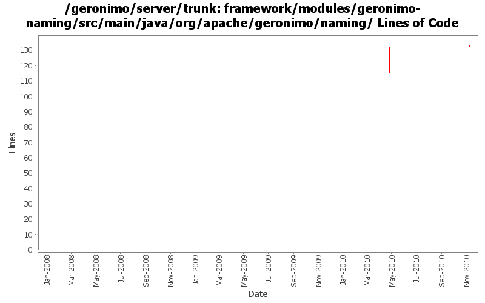

[root]/framework/modules/geronimo-naming/src/main/java/org/apache/geronimo/naming
 defaultcontext
(1 files, 55 lines)
defaultcontext
(1 files, 55 lines)
 enc
(1 files, 96 lines)
enc
(1 files, 96 lines)
 java
(2 files, 161 lines)
java
(2 files, 161 lines)
 reference
(11 files, 708 lines)
reference
(11 files, 708 lines)
 rmi
(1 files, 55 lines)
rmi
(1 files, 55 lines)

| Author | Changes | Lines of Code | Lines per Change |
|---|---|---|---|
| Totals | 9 (100.0%) | 167 (100.0%) | 18.5 |
| djencks | 6 (66.7%) | 145 (86.8%) | 24.1 |
| gawor | 1 (11.1%) | 19 (11.4%) | 19.0 |
| xuhaihong | 1 (11.1%) | 2 (1.2%) | 2.0 |
| jlaskowski | 1 (11.1%) | 1 (0.6%) | 1.0 |
GERONIMO-5579 a. Wrap the default rmi urlContextFactory b. Enable multiple RemoteDeploymentManager in the same vm of the server runtime
2 lines of code changed in 1 file:
license headers
19 lines of code changed in 1 file:
GERONIMO-5041 Integration aries osgi jndi implementation
85 lines of code changed in 2 files:
GERONIMO-4916 step 2 move sandbox osgi framework into trunk
30 lines of code changed in 1 file:
GERONIMO-4916 step 1 remove old framwork
0 lines of code changed in 2 files:
header fixes (Rev, Date)
1 lines of code changed in 1 file:
GERONIMO-3718 experimental patch to speed up resource-refs.
30 lines of code changed in 1 file: